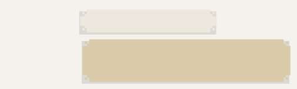

—Sí, es un poco complicado.
Yo, si fuera tú, convocaría a los gemelos, al Rumano, al capitán y a Josephine, y les explicaría.
Creo que no hay otra alternativa.
¿O sí?
—Creo que no.
Voy a buscar al Rumano y organizar el encuentro.
Te aviso, ahora volvé con los gemelos.
—De acuerdo.
Y que la fuerza te acompañe.
—¡No estoy para bromas!
Pero ambos sonríen.
Javier da vueltas por los pasillos, pero no lo encuentra.
Por fin decide ir hasta la cabina del capitán.
Algo le dice que están reunidos allí.
Golpea suavemente la puerta, y el capitán abre y lo mira sorprendido.
—¿Ocurre algo?
—En realidad, sí.
Me gustaría que habláramos.
Se da vuelta y le manda un mensaje a Federica:

14:00, 27 de junio de 1930
JAVI
Venite con los gemelos a la cabina del capitán
La respuesta es inmediata:
FEDE
Okis
—Te escuchamos.